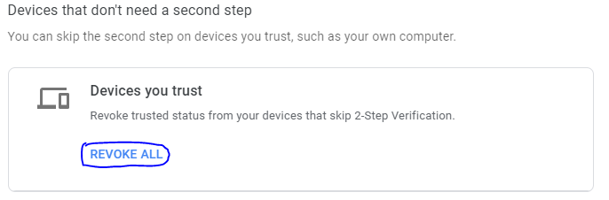

By Peter J. Menzies
I recently got a Yubikey (A USB-like method of two-factor authentication), but because of the type I got, I was unable to use it on my phone. As a secondary option for my phone, I kept the google authenticator on most of my accounts. In the mindset of security, I revoked all trusted devices.

On my phone, I attempted to sign back into all my accounts. I go to my Google account, enter my 30 character password, and it asked me to enter the authenticator code. I go back to my home screen, open the authenticator, memorize the code, and look to go back to my login page. It turns out due to security concerns, google closes the login page if you leave it. From this point on I knew to complete my goal of logging in I would need to memorize the authenticator key, enter my password, and enter the authenticator key correctly before the 30-second authenticator key timed out.
This was an ineffective, inefficient, and incredibly unsatisfying login page. All of these come from needing to re-enter my password every time I leave the page. I describe "satisfying" as how enjoyable a process is. Repeating something multiple times is rarely enjoyable. I attempted this login multiple times and by the end of it, I felt like throwing my phone through the wall.
Secondly, let's talk about efficiency. Efficiency is a measure of how long it takes to get a task done and how many steps it took to do it. I'm not fast at typing on an on-screen keyboard, so, entering 30 characters in 30 seconds is difficult for me on a good day. Add that to the need to repeat if I get anything wrong at all and this isn't an efficient way of logging in.
Last, let's talk about effectiveness. Effectiveness is mostly the measure of whether or not the goal was accomplished, but I also consider the need for external tools, notepads, or other resources a failure of effectiveness. With this definition, the login screen failed in its effectiveness. I was unable to login. I needed to copy my password to my clipboard and paste the password in, so I could have enough time to enter the authenticator password.
All of this headache and trouble came just because of a slight oversight that someone might need to leave the page in order to check on the authenticator code. A simple fix would be allowing people to leave the page when asking for an authenticator code.